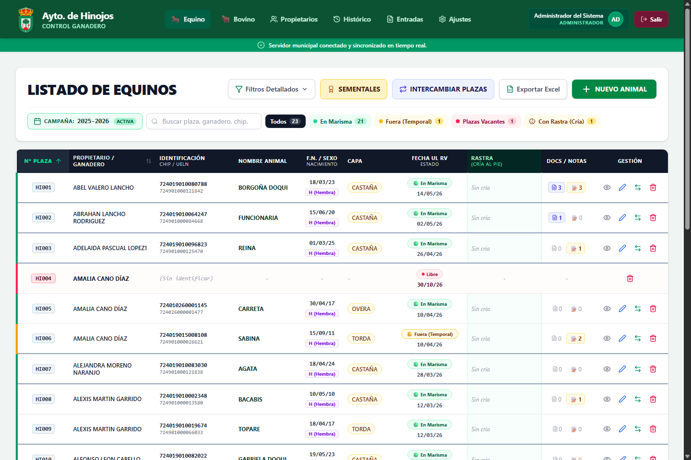
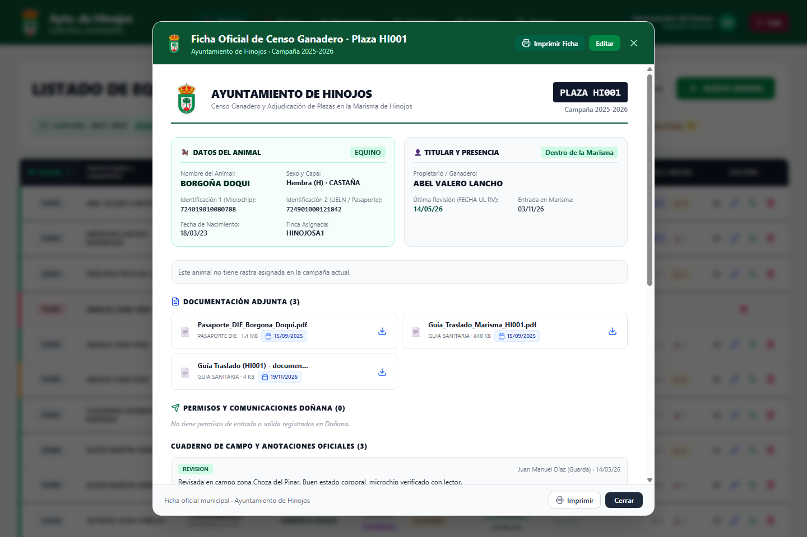
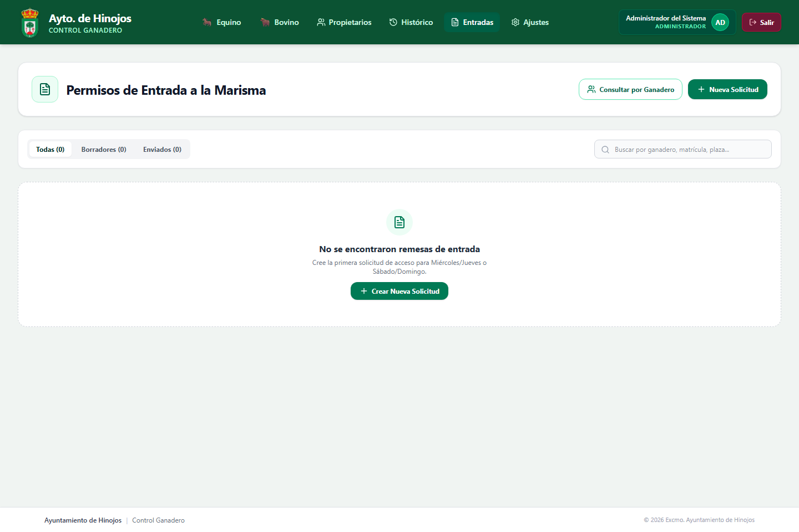
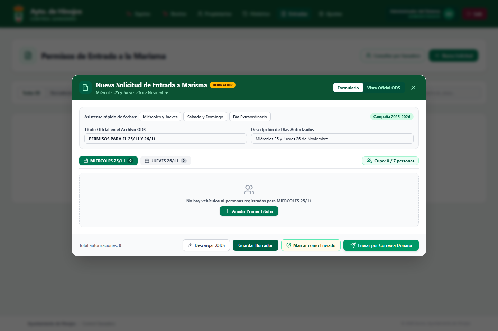
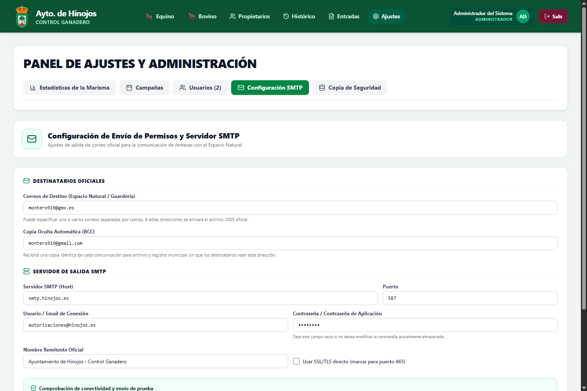

Documento de Ingeniería & Transferencia de Software
MANUAL TÉCNICO Y ARQUITECTURA DEL SISTEMA
Gestión Ganadera, Censo Zootécnico, Permisos de Entrada y Control de Plazas
Marisma de Hinojos (Parque Nacional de Doñana)
Plataforma Web Fullstack · Node.js 24 · Express / Serverless Vercel · React 19 · TypeScript · Supabase PostgreSQL & Storage · Nodemailer AES-256
Índice de Contenidos Técnicos
- Objetivos del Proyecto y Reglas Municipales de Hinojos
- Pila Tecnológica Exhaustiva (Stack Frontend, Backend, Storage y Envío Cifrado)
- Estructura del Repositorio y Arquitectura de Archivos
- Modelo de Datos Relacional en Supabase (PostgreSQL) y Storage
- Lógica de Negocio y Algoritmos Específicos del Dominio Ganadero
- Arquitectura del Módulo Oficial «Permisos de Entrada a la Marisma»
- 6.1. Gestión de remesas semanales y agrupaciones oficiales (Mié/Jue y Sáb/Dom).
- 6.2. Autocompletado reactivo desde censo y deduplicación por persona y animal.
- 6.3. Almacenamiento y vinculación de Guías Sanitarias con limpieza automática de storage.
- 6.4. Generación oficial .ODS a partir de plantilla de Doñana (formato visual y wrap).
- 6.5. Módulo de auditoría y consulta de accesos por persona para mandos e informes.
- 6.6. Estados de remesa y marcado formal (
ENVIADO [DÍA] DD/MM/AA).
- Arquitectura del Módulo «Configuración SMTP» con Cifrado AES-256-GCM
- Guía Procedimental: Cómo Realizar Cambios Futuros en el Proyecto
- Seguridad, Autenticación y Hardening del Sistema
- Configuración del Entorno (.env) y Guía de Comandos Oficiales
- Subsistema de Copias de Seguridad (.ZIP Atómico) y Recuperación ante Desastres
ℹ️ Actualización de Noviembre de 2026
Esta edición técnica incorpora la integración completa del
Módulo Oficial de Permisos de Entrada a la Marisma, el sistema de almacenamiento en
Supabase Storage (bucket
marisma-documents), el envío protocolario de informes a la guardería de Doñana mediante
Nodemailer con credenciales cifradas AES-256-GCM y la auditoría de accesos para superiores.
1. Objetivos del Proyecto y Reglas Municipales de Hinojos
1.1. Contexto Operativo y Geográfico
La Marisma de Hinojos constituye una de las zonas comunales de pastoreo más relevantes del Espacio Natural de Doñana (Huelva, España). La ordenación de este espacio comunal está regida por ordenanza municipal del Excmo. Ayuntamiento de Hinojos, cuyo propósito es garantizar una carga ganadera equilibrada y sostenible para proteger el ecosistema de la marisma.
La aplicación Gestión Marisma 2 centraliza de manera digital no solo el censo zootécnico y control de plazas, sino también la tramitación oficial de autorizaciones y permisos de entrada de vehículos, personas y ganado para faenas ganaderas (soltar, recoger o repasar), coordinándose periódicamente con los servicios de guardería del Parque Nacional de Doñana.
1.2. Principios y Reglas de Negocio Incorporadas en Código
-
Cómputo Estricto de Cupo Municipal: La capacidad ganadera de la marisma se define en número de plazas ordinarias adjudicadas (por ejemplo, 29 plazas en la campaña 2025-2026). El censo oficial únicamente computa estas plazas asignadas (estén ocupadas o vacantes a nombre del titular).
-
Exención de Cupo para Sementales Reproductores: Los caballos y toros sementales autorizados para la parada comunal y el libro de cubrición pastan físicamente en la marisma pero no consumen ni descuentan plazas del cupo del ganadero ni del censo municipal.
-
Exención de Cupo para Crías Lactantes (Rastras al pie): Las crías que acompañan a sus madres no computan como plaza individual mientras mantengan la condición de rastra lactante.
-
Regla Zootécnica de los Bovinos (Sin Nombre): Por normativa de trazabilidad bovina comunal, el ganado vacuno carece de nombre. Se identifica exclusivamente mediante su Crotal Oficial (ej.
ES012104001920) y su número de plaza municipal correlativa con prefijo HINxxx.
-
Regla Zootécnica de los Equinos: Los equinos cuentan con nombre zootécnico oficial, Microchip de 15 dígitos (o UELN de 15 caracteres) y número de plaza con prefijo
HIxxx.
-
Derecho de Reingreso y Reserva de Plaza: Cuando un animal es retirado temporalmente de la marisma (cura, paridera, feria), se registra un movimiento de tipo Salida Temporal. En este estado, el animal queda marcado como
FUERA, pero conserva su plaza reservada sin que nadie pueda arrebatársela.
-
Gestión Estricta por Campañas Anuales: El sistema organiza la información en ejercicios ganaderos (ej.
2024-2025, 2025-2026, 2026-2027). La creación de una nueva campaña dispone de un asistente inteligente de traspaso que clona los socios y el censo seleccionado, manteniendo los históricos intactos.
-
Control de Días Oficiales de Acceso: Las autorizaciones de entrada a la marisma se organizan en los turnos habituales (Miércoles/Jueves o Sábado/Domingo) o extraordinarios, limitando a un máximo estricto de 7 personas por remesa para preservar el espacio protegido.
2. Pila Tecnológica Exhaustiva (Stack del Sistema)
El sistema está construido siguiendo una arquitectura de vanguardia desacoplada, con tipado estático estricto de extremo a extremo (TypeScript) y empaquetamiento serverless compatible tanto con la nube moderna (Vercel, Supabase) como con entornos on-premise mediante Node.js nativo.
| Capa |
Tecnología |
Versión |
Función y Rol en el Proyecto |
| Frontend Core |
React + TypeScript |
19.0.1 / 5.8+ |
Renderizado reactivo por componentes, hooks personalizados y tipado riguroso de entidades. |
| Build Tool |
Vite |
8.3.5+ |
Servidor de desarrollo ultrarrápido HMR y bundler optimizado de producción. |
| Estilos UI |
Tailwind CSS |
v4.3+ |
Framework CSS utilitario de nueva generación compilado con @tailwindcss/vite. |
| Iconografía |
Lucide Icons |
0.546+ |
Conjunto de iconos vectoriales coherentes y de alto contraste (SVG limpios). |
| Backend API |
Node.js + Express |
24 LTS / 4.21+ |
Servidor HTTP RESTful modularizado, middleware de seguridad y enrutamiento institucional. |
| Base de Datos |
Supabase PostgreSQL |
PG 15+ |
Base de datos relacional Cloud con escalabilidad automática, backups continuos y RLS. |
| Almacenamiento |
Supabase Storage |
Bucket marisma-documents |
Almacenamiento de guías de traslado, certificados sanitarios, pasaportes y fotos de marcas. |
| Salida de Correo |
Nodemailer + Crypto |
AES-256-GCM |
Envío oficial por SMTP de remesas .ODS a Doñana con contraseñas cifradas en base de datos. |
| Seguridad / Auth |
JWT + Scrypt |
HS256 / 16B Salt |
Criptografía nativa Node.js (crypto.scryptSync), tokens firmados y rate limiter en memoria. |
| Libros Oficiales |
JSZip + XML Templates |
3.10+ |
Generador nativo de libros de cálculo OpenDocument (.ods) multipestaña y remesas semanales. |
| Despliegue Serverless |
esbuild + Vercel Functions |
0.28+ |
Empaquetado automático en api/index.js con banner de compatibilidad ESM/CJS. |

Figura 2.1: Barra de navegación institucional oficial del Ayuntamiento de Hinojos mostrando las 6 pestañas principales (Equino, Bovino, Propietarios, Histórico, Entradas y Ajustes) con sincronización en tiempo real.
3. Estructura del Repositorio y Arquitectura de Archivos
El código fuente se organiza siguiendo el principio de separación de responsabilidades:
GESTION MARISMA 2/
├── api/ # Salida del empaquetado Serverless para Vercel Functions
│ └── index.js # Bundle unificado Node.js generado por esbuild
├── data/ # Almacén de base de datos local y backups SQLite
│ └── marisma.db # Archivo SQLite para contingencia y snapshots
├── docs/ # Documentación, capturas de pantalla y manuales PDF
│ ├── screenshots/ # Capturas reales en alta resolución del sistema
│ ├── MANUAL_TECNICO_GESTION_MARISMA.pdf
│ └── MANUAL_USUARIO_GESTION_MARISMA.pdf
├── server/ # Backend RESTful en Node.js y TypeScript
│ ├── services/
│ │ ├── odsExportService.ts # Motor de exportación de libros zootécnicos ODS
│ │ ├── entradasOdsService.ts # Generador de plantilla ODS oficial de Doñana con wrap
│ │ └── mailService.ts # Servicio Nodemailer con descifrado AES-256-GCM
│ ├── templates/
│ │ └── plantilla_entradas_donana.ods # Plantilla ODS oficial del Espacio Natural
│ ├── auth.ts # Criptografía scrypt, generación/validación JWT y rate limiter
│ ├── crypto.ts # Algoritmo de cifrado y descifrado AES-256-GCM para SMTP
│ ├── dataAdapter.ts # Capa DAO con queries a Supabase (animales, remesas, smtp)
│ ├── index.ts # Servidor Express, enrutador REST, validación y CORS
│ ├── mappers.ts # Mapeadores bidireccionales snake_case <-> camelCase
│ └── supabaseClient.ts # Instancia del cliente SDK Supabase con Service Role
├── src/ # Frontend React 19 + TypeScript
│ ├── components/ # Componentes y vistas de la aplicación
│ │ ├── AnimalDetailModal.tsx # Ficha oficial del animal con fechas de subida de guías
│ │ ├── AnimalModal.tsx # Formulario de alta/edición (Paso 1 identificador obligatorio)
│ │ ├── AnimalTable.tsx # Tabla de censo con buscador, ordenación y acciones
│ │ ├── EntradaConsultaPersonaModal.tsx # Consulta histórica de accesos por persona
│ │ ├── EntradaEditorModal.tsx # Formulario completo de tramitación de permisos de entrada
│ │ ├── EntradasView.tsx # Listado oficial de remesas de acceso a la marisma
│ │ ├── Header.tsx # Cabecera institucional con las 6 pestañas oficiales
│ │ ├── HistoryMovementsView.tsx # Trazabilidad cronológica de movimientos de animales
│ │ ├── OwnersView.tsx # Directorio de ganaderos con validador DNI Módulo 23
│ │ ├── SettingsView.tsx # Panel de administración, estadísticas, campañas y SMTP
│ │ ├── SmtpConfigView.tsx # Configuración de salida de correo y prueba de envío
│ │ ├── StallionsView.tsx # Registro municipal del libro de sementales reproductores
│ │ ├── SwapPlazasModal.tsx # Modal de permuta directa e intercambio de plazas
│ │ └── UsersView.tsx # Gestión de cuentas de usuario y asignación de roles
│ ├── services/
│ │ ├── apiClient.ts # Cliente HTTP con resiliencia, reintentos y tokens
│ │ └── apiService.ts # Fachada de métodos API consumidos por los componentes
│ ├── types/
│ │ └── marisma.ts # Definición canónica de entidades e interfaces TypeScript
│ ├── App.tsx # Componente raíz, orquestador de estado y router SPA
│ └── index.css # Directivas de Tailwind CSS v4 y estilos de impresión
├── scripts/
│ ├── buildPdfs.ts # Compilador de manuales HTML a PDF mediante Chromium
│ ├── buildServerless.js # Bundler esbuild para empaquetar API en Vercel
│ └── captureScreenshots.ts # Motor automatizado CDP para capturas en vivo de la app
├── .env # Variables de entorno y secretos criptográficos
├── package.json # Dependencias, scripts de arranque y configuración
└── vercel.json # Reglas de enrutamiento y proxy serverless para Vercel
4. Modelo de Datos Relacional en Supabase (PostgreSQL)
La base de datos reside en Supabase Cloud (PostgreSQL 15+). Las tablas principales del sistema zootécnico y del módulo de permisos de entrada son:
| Tabla |
Clave Primaria (PK) |
Claves Foráneas (FK) |
Descripción del Registro |
animals |
id (VARCHAR) |
campana -> campaigns |
Plazas censadas. Contiene microchip/crotal, plaza, estado y titular. |
owners |
id (VARCHAR) |
campana -> campaigns |
Ganaderos censados en cada campaña con DNI/CIF y código REGA. |
entradas_remesas |
id (VARCHAR) |
campana -> campaigns |
Remesas semanales de permisos de acceso con estado, fechas y título ODS. |
entradas_documentos |
id (VARCHAR) |
animal_id -> animals |
Guías de traslado sanitario vinculadas a una entrada y a la ficha del animal. |
stallions |
id (VARCHAR) |
campana -> campaigns |
Libro de sementales reproductores autorizados (sin cómputo de cupo). |
movements |
id (VARCHAR) |
animal_id -> animals |
Trazabilidad de entradas, salidas temporales, reingresos y bajas. |
settings |
key (VARCHAR) |
- |
Configuración del sistema: campaña activa y parámetros SMTP cifrados. |
users |
id (VARCHAR) |
- |
Usuarios del sistema con contraseñas scrypt y roles RBAC. |
5. Lógica de Negocio y Algoritmos Específicos del Dominio
5.1. Algoritmo Oficial de Validación de Documentos (Módulo 23)
En el componente OwnersView.tsx se encuentra implementado el algoritmo oficial de validación de identificaciones de personas físicas y jurídicas de España:
- DNI: Se extraen los 8 dígitos numéricos, se calcula el resto sobre 23 (
resto = número % 23) y se mapea con la cadena oficial "TRWAGMYFPDXBNJZSQVHLCKE".
- NIE: Se reemplaza la letra inicial (
X=0, Y=1, Z=2) y se aplica el Módulo 23.
- CIF: Se calculan las sumas ponderadas de posiciones pares e impares, obteniendo el dígito o letra de control según el tipo de sociedad.
- Asistente Reactivo: Si el usuario introduce el número con una letra incorrecta o sin letra, el formulario despliega un botón reactivo: "Asignar letra oficial correcta: [X]" que corrige el campo en un solo clic.
5.2. Paso 1 Bloqueante en Formularios de Alta
Tanto en el alta de animales (AnimalModal.tsx) como de sementales (StallionsView.tsx) y ganaderos (OwnersView.tsx), se implementa un primer paso obligatorio e interactivo:
- El campo
Identificación 1 (Microchip o Crotal) es el único campo activo inicialmente.
- El usuario debe escribir un mínimo de 4 caracteres para que se ejecute la verificación asíncrona.
- Si el microchip ya existe en la campaña activa, el sistema bloquea el formulario con un mensaje en rojo: "Este identificador ya está asignado a la plaza [X] en esta campaña".
- Si el microchip existe en campañas anteriores, el sistema emite una notificación en verde y autorrellena automáticamente todos los campos conocidos (nombre, sexo, capa, fecha de nacimiento, ganadero habitual y UELN).
5.3. Repositorio Documental con Fechas de Subida
En cumplimiento de los requerimientos de trazabilidad documental, todos los archivos adjuntos (Pasaportes DIE, Guías Sanitarias y Certificados) se muestran en la ficha técnica (AnimalDetailModal.tsx) indicando de forma explícita su fecha de registro en el sistema con el formato visual 📅 DD/MM/AAAA:

Figura 5.1: Ficha técnica oficial mostrando las guías sanitarias y pasaportes con su correspondiente fecha de subida (📅 DD/MM/AAAA) y la sección de permisos de Doñana vinculados.
6. Arquitectura del Módulo Oficial «Permisos de Entrada a la Marisma»
El módulo de permisos de entrada (accesible desde la pestaña 📄 Entradas del menú superior) digitaliza y agiliza la comunicación semanal entre el Ayuntamiento de Hinojos y la Guardería del Espacio Natural de Doñana.

Figura 6.1: Panel principal de Entradas a la Marisma con filtros de estado (Borradores / Enviados), buscador por titular o matrícula, botón de consulta por ganadero y creación de nuevas solicitudes.
6.1. Flujo de Trabajo y Tramitación de Remesas
A través de EntradaEditorModal.tsx, los técnicos municipales registran las solicitudes de acceso agrupándolas por los turnos autorizados:
- Asistente Rápido de Días: Botones rápidos para calcular automáticamente las fechas del próximo turno ordinario (Miércoles y Jueves o Sábado y Domingo) o configurar días extraordinarios.
- Control de Cupo Máximo: Contador en vivo con límite estricto de 7 personas por remesa.
- Autocompletado Asistido: Al comenzar a escribir el nombre del titular o de un equino, el sistema busca en el censo activo y autorrellena DNI, teléfono, nombre del animal, plaza y microchip.
- Deduplicación Estricta: El sistema impide que una misma persona o un mismo caballo figure más de una vez en la misma fecha de acceso.

Figura 6.2: Formulario de tramitación de permisos con selector de fechas oficiales, contador de cupo, asignación de vehículos/acompañantes y opciones de descarga, guardado o envío directo por correo.
6.2. Subida de Guías Sanitarias y Limpieza de Storage
Desde el propio formulario de entrada, se permite subir el archivo PDF de la Guía de Traslado Sanitaria cuando la faena implica soltar o retirar animales. La guía se almacena en el bucket marisma-documents de Supabase Storage y se vincula automáticamente a la ficha del animal en la marisma. Si posteriormente se elimina una solicitud, el backend purga los documentos huérfanos de Storage para no agotar la cuota de alojamiento.
6.3. Generación Oficial .ODS (LibreOffice Calc) con Plantilla Doñana
El servicio server/services/entradasOdsService.ts utiliza la plantilla oficial de la Junta de Andalucía (server/templates/plantilla_entradas_donana.ods). Mediante manipulación XML directa:
- Se inyecta la cabecera verde institucional y bordes completos en todas las celdas.
- Se aplica la directiva
fo:wrap-option="wrap" en la columna de observaciones para que las explicaciones extensas no desborden la celda.
- Se incluye una línea divisoria visual y elegante entre días consecutivos (ej. entre sábado y domingo).
6.4. Consulta de Accesos por Ganadero para Superiores Municipal
El componente EntradaConsultaPersonaModal.tsx proporciona una herramienta de auditoría zootécnica para mandos del Ayuntamiento:

Figura 6.3: Modal de consulta histórica de accesos por persona con filtros temporales, desglose por faena (soltar/recoger/repasar) y botón directo [Ver] en modo solo lectura.
6.5. Ciclo de Vida y Estados de Remesa
- BORRADOR (Ámbar): Solicitud abierta en preparación.
- ENVIADO (Verde): Solicitud formalizada remitida a Doñana. Puede enviarse directamente por correo o marcarse manualmente (para trámites telefónicos/presenciales). El título se actualiza al formato oficial:
ENVIADO [DÍA_SEMANA] DD/MM/AA (ej. ENVIADO MARTES 17/11/26).
7. Arquitectura del Módulo «Configuración SMTP» con Cifrado AES-256-GCM
Ubicado en la pestaña Configuración SMTP dentro de Ajustes (SmtpConfigView.tsx), permite gestionar la salida oficial de correo para remitir los partes semanales a Doñana:

Figura 7.1: Panel de administración SMTP con configuración de destinatarios oficiales, copias ocultas (BCC), servidor de salida y botón de comprobación en tiempo real.
7.1. Criptografía Simétrica AES-256-GCM en Base de Datos
Para proteger las credenciales municipales, la contraseña del servidor de correo nunca se almacena en texto plano. En server/crypto.ts se implementa:
// Algoritmo: AES-256-GCM con Vector de Inicialización (IV) de 16 bytes
// y Authentication Tag de 16 bytes para verificar autenticidad y prevenir manipulaciones
const cipher = crypto.createCipheriv('aes-256-gcm', derivedKey, iv);
let encrypted = cipher.update(plainPassword, 'utf8', 'hex');
encrypted += cipher.final('hex');
const authTag = cipher.getAuthTag().toString('hex');
const storedPayload = `${iv.toString('hex')}:${authTag}:${encrypted}`;
7.2. Protocolo de Envío Institucional
- Asunto Dinámico:
Entradas Marisma- [Días Autorizados] [Año] (ej. Entradas Marisma- Sábado 21 y Domingo 22 de Noviembre 2026).
- Cuerpo Institucional: Saludo formal del Ayuntamiento de Hinojos indicando la remisión del parte semanal adjunto en formato
.ods para la guardería.
- Destinatarios y BCC: Admite listas de correos separados por comas y copia oculta automática (BCC) para el archivo del departamento.
8. Guía Procedimental: Cómo Realizar Cambios Futuros
Procedimiento 8.1: Modificar la Plantilla ODS de Doñana
La plantilla base reside en server/templates/plantilla_entradas_donana.ods. Para modificar su estructura visual:
- Abrir el fichero con LibreOffice Calc, realizar las modificaciones deseadas en títulos, logos o estilos de celda y guardar en formato ODS.
- El servicio
server/services/entradasOdsService.ts descomprime este archivo en memoria con jszip, localiza el fichero content.xml e inyecta las filas dinámicas de personas, vehículos y faenas respetando los estilos de celda originales.
Procedimiento 8.2: Añadir un Nuevo Tipo de Faena Ganadera
Actualmente se contemplan SOLTAR, RECOGER y REPASAR. Para añadir una nueva faena (por ejemplo, SANEO MUNICIPAL):
- En
src/types/marisma.ts, modificar: export type FaenaType = 'SOLTAR' | 'RECOGER' | 'REPASAR' | 'SANEO';
- En
src/components/EntradaEditorModal.tsx, añadir la opción en el desplegable de faenas con su color identificativo.
- En
server/services/entradasOdsService.ts, comprobar que el texto se mapee correctamente en la celda de faena de la hoja de cálculo.
9. Seguridad, Hardening y Comandos de Ejecución
9.1. Guía de Comandos Oficiales (Windows / PowerShell)
Para operar, compilar y verificar el sistema en la terminal:
# 1. Arrancar el Servidor Backend (Express + Supabase en puerto 3001)
cmd.exe /c "npm run server"
# 2. Arrancar el Frontend de Desarrollo (Vite en puerto 3000)
cmd.exe /c "npm run dev"
# 3. Comprobación de Tipos e Integridad de TypeScript
cmd.exe /c "npm run lint"
# 4. Compilación Completa de Producción (Cliente + Servidor Serverless)
cmd.exe /c "npm run build"
# 5. Compilación de los Manuales Oficiales a PDF
cmd.exe /c "npm run docs:pdf"
10. Subsistema de Copias de Seguridad (.ZIP)
En la pestaña Copia de Seguridad de Ajustes, el botón "Descargar Copia de Seguridad Completa (.ZIP)" genera en 1 clic un respaldo atómico de toda la base de datos, documentos adjuntos de Supabase Storage y manifiesto institucional con hash de integridad, permitiendo su restauración segura con copia de emergencia previa.